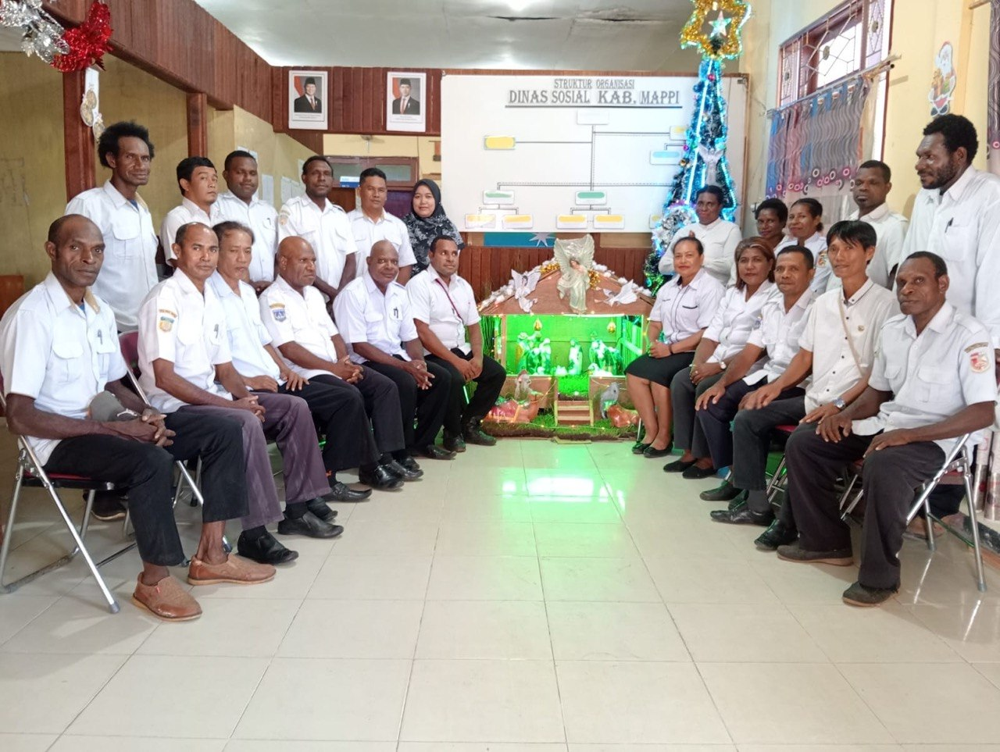

Portal Layanan Publik & Kinerja Digital – Bersama Membangun Kesejahteraan Sosial

Informasi transparan jumlah Keluarga Penerima Manfaat (KPM) dan progres bantuan sosial daerah.
Lihat Detail →Panduan pengusulan DTSEN/SIKS-NG, PBI-JKN, serta persyaratan administrasi bantuan sosial.
Akses Layanan →Profil pimpinan, kepala bidang, serta struktur kepegawaian resmi Dinas Sosial Kabupaten Mappi.
Buka Direktori →